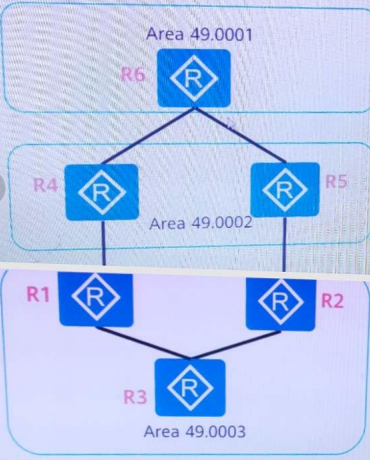
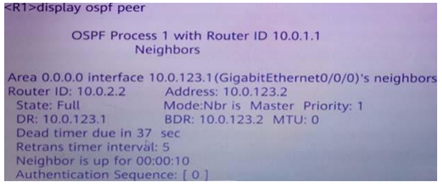
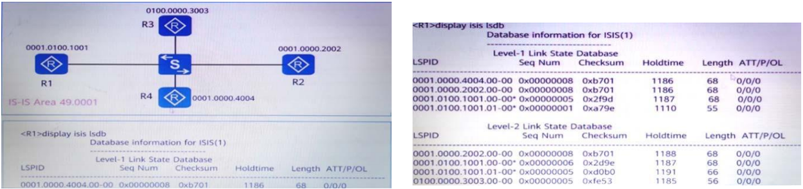

HCIP DATACOM CORE H12-821
As shown in the figure, all routers run IS-IS. R3 is a Level-1 router, R6 is a Leve1-2 router, and the
other routers are Level-1-2 routers. What are the types of neighbor relationships between routers? Multiple choice) 
. RSTP redefines port roles. Please match RSTP port roles with their roles.
Please match the following VRRP status with the corresponding working mechanism.
The output information of a router is as follows, please match the information on the left with the
information on the right. 
Please match the following hardware modules with the corresponding functions
The MQC traffic behavior supports multiple actions on messages. Please match the actions of the
following MQC traffic behaviors with their functions.
All single switches in the stacking system are called member switches, and can be divided into
different roles according to their functions. Please match the roles of the following member switches with
their functions
All routers in a certain network run IS-S and are in Area 49.0001. The LSDB of R1 is shown in the
figure, and the Level of the four routers is judged based on this.
The routing strategy supports multiple operations on routing attributes. Please match the parameters
of the following apply clauses with their functions. (Drag and drop)
The routing strategy supports multiple operations on routing attributes. Please match the parameters
of the following apply clauses with their functions
Please match the following IGMP version with the corresponding working mechanism. (Drag and drop)